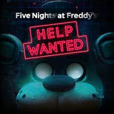
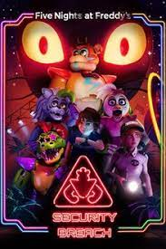

Five Nights at Freddy's (FNAF): El primer juego de la serie introduce al jugador como un guardia de seguridad nocturno en Freddy Fazbear's Pizza. El objetivo es sobrevivir cinco noches enfrentando a animatrónicos animados que deambulan por el lugar. Debe monitorear las cámaras de seguridad, cerrar puertas y conservar la energía para evitar ser atrapado por los personajes espeluznantes.

Five Nights at Freddy's 2: Esta secuela tiene lugar en una versión renovada de Freddy Fazbear's Pizza. Como nuevo guardia de seguridad, debes sobrevivir durante seis noches evitando a una nueva generación de animatrónicos. El enfoque principal cambia a utilizar una máscara para engañar a los personajes mientras encuentras formas de mantenerte a salvo.

Five Nights at Freddy's 3: Ambientado en una atracción llamada Fazbear's Fright: The Horror Attraction, este juego te sitúa como el guardia de seguridad encargado de monitorear un lugar lleno de recuerdos de Freddy Fazbear's Pizza. Un único animatrónico acecha en las sombras mientras debes utilizar cámaras de seguridad y herramientas limitadas para defenderte y deshacerte de él.

Five Nights at Freddy's 4: En esta entrega, el escenario cambia a una casa en la que el protagonista es un niño que lucha contra sus miedos y pesadillas relacionadas con los animatrónicos. El objetivo es sobrevivir hasta el amanecer mientras se evita ser atrapado por las criaturas, utilizando sonidos y linternas para mantenerlos a raya.
Five Nights at Freddy's: Sister Location: Esta entrega presenta una ubicación diferente, Circus Baby's Pizza World, donde te conviertes en un técnico de mantenimiento. En lugar de permanecer en una oficina, debes moverte por diferentes áreas del lugar, interactuar con los animatrónicos y resolver acertijos para sobrevivir. La historia se desarrolla a través de diálogos y secuencias de video.
Five Nights at Freddy's: Pizzeria Simulator: Aparentemente un simulador de pizzería, este juego combina elementos de gestión y horror. El jugador asume el papel de un propietario de una pizzería y debe realizar tareas como administrar finanzas, diseñar anuncios y distribuir tareas mientras se enfrenta a la amenaza de animatrónicos que acechan en la noche.
Five Nights at Freddy's: Ultimate Custom Night: Es un juego que permite al jugador personalizar su propia experiencia, eligiendo cuáles y cuántos animatrónicos aparecerán. El objetivo es sobrevivir a una noche personalizada mientras se enfrenta a una combinación de personajes de toda la serie.

Five Nights at Freddy's VR: Help Wanted: Esta entrega se desarrolla en un entorno de realidad virtual, donde el jugador participa en una colección de minijuegos basados en los juegos anteriores de FNAF. Cada minijuego presenta un desafío diferente relacionado con los animatrónicos, poniendo a prueba los reflejos y la capacidad de resolver problemas del jugador.

Five Nights at Freddy's: Security Breach: El último juego de la serie hasta la fecha, lanzado en 2021. Ambientado en un enorme centro comercial llamado Freddy Fazbear's Mega Pizza Plex, debes explorar el lugar y descubrir sus secretos mientras evitas a los nuevos y poderosos animatrónicos. El juego presenta un enfoque más amplio y una jugabilidad más abierta que los títulos anteriores de FNAF.